Dispositivos de almacenamiento y copias de seguridad
Índice
- 1. Introducción
- 2. Medios de almacenamiento en memoria secundaria.
- 3. Unidades de medida de la información
- 4. Redundancia en discos: RAID
- 5. Los niveles RAID
- 6. La conexión de los almacenamientos
- 7. La detección del deterioro de los discos
- 8. Redundancia en servidores: clústeres.
- 9. El respaldo de los datos: la copia de seguridad.
- 10. Referencias
1 Introducción
En éste tema hablaremos de los distintos tipos de dispositivos de almacenamiento de la información que se utilizan en la actualidad, comentando sus principales ventajas, inconvenientes y vulnerabilidades.
Los dispositivos de almacenamiento los debemos contemplar desde dos perspectivas distintas: bien como medio en el que se guarda la información viva, es decir, información con la que se está trabajando, que se está moviendo… o bien como medio de almacenamiento de respaldo, es decir, como copia de seguridad de información viva.
Hablaremos de dos conceptos clave: la redundancia y el respaldo de la información.
- La redundancia es la técnica por la cual la información se almacena en varios sitios, o de varias formas, de tal manera que ante un fallo en un medio de almacenamiento debido a cualquier causa física o a simple deterioro por el uso, se pueda seguir trabajando… pero éste mecanismo debe ser transparente… Si se produce un fallo, la actividad de los sistemas informáticos no debería verse afectada. Los sistemas RAID son el ejemplo típico de almacenamiento redundante.
- El respaldo es el acto por el cual se almacena adrede una copia de información en un medio destinado a reconstruir la información original sólo en caso de pérdida, por un ataque bien accidental o fortuito. El ejemplo típico lo constituyen las copias de seguridad. Hacer una copia de seguridad puede ser algo tan sencillo como copiar una carpeta periódicamente a pendrive… pero ésto puede plantear problemas de seguridad obvios. De ello trataremos en el apartado correspondiente.
Tanto una cosa como la otra no pueden evitar ataques (la redundancia no puede evitar el deterioro de un dispositivo ni el respaldo puede evitar una posible pérdida de la información original)… así que ambas son medidas de seguridad PASIVAS. También hablaremos del almacenamiento y la organización de servidores en ambiente profesional.
2 Medios de almacenamiento en memoria secundaria.
El almacenamiento de la información de un ordenador puede producirse en la memoria principal del ordenador (antes llamada RAM), y que es la que la CPU utiliza para trabajar directamente con los datos. Llamamos de manera genérica memoria secundaria a todos a aquellos dispositivos que permiten almacenar información de manera permanente, no dependiente del suministro eléctrico, y que el sistema operativo gestiona en forma de ficheros. Éstos medios de almacenamiento aprovechan distintas características físicas para almacenar los “1” y “0” que componen la información binaria.
Básicamente, hay tres grandes grupos:
2.1 Magnéticos
Hoy en día se reducen únicamente a discos duros y cintas magnéticas, aunque anteriormente fueron bastante populares los discos flexibles. Se basan en la propiedad de las moléculas de los materiales magnéticos de “girar” y orientarse en la dirección de un campo magnético. Esa orientación se utiliza para representar los valores binarios de 1 y 0.
2.1.1 Discos duros:
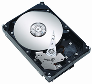
Figura 1: Disco duro mecánico
Ventajas:
- Gran capacidad
- Velocidad
- Buena relación coste/GB
- Admiten una enorme cantidad de ciclos de escritura sin degradarse
Vulnerabilidades:
- Debido a sus partes mecánicas tienen una vida útil limitada a unos pocos años: unos discos más, otros menos… pero no duran eternamente.
Uso
- El dispositivo más utilizado como medio de trabajo, y de almacenamiento de información viva.
- Como dispositivo de copia de seguridad puede utilizarse, por supuesto, pero conviene siempre tener en mente que tienen una duración limitada… y que en caso de ser extraíble, sus partes móviles lo hacen relativamente “delicado”.
2.1.2 Las cintas magnéticas
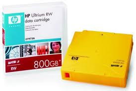
Figura 2: Cinta de backup
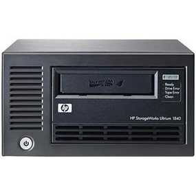
Figura 3: Unidad de cinta
Son un viejo invento que todavía tiene su vigor. Se trata de una simple cinta de material plástico recubierta de material magnético y metida en una carcasa. Por supuesto, son un dispositivo de escritura y lectura secuencial.
Ventajas:
- Se estima que una cinta magnética mantiene la información durante muchos años
- Tiene un coste por GigaByte comparativamente bajo
- Es extraíble siempre
Inconvenientes
- Es un dispositivo secuencial y no muy rápido.
Se usa casi exclusivamente para el respaldo de la información. La información en la cinta no se usa directamente… siempre es copia de información viva. Sólo se recurre a la cinta si la información viva sufre un ataque.
2.2 Ópticos
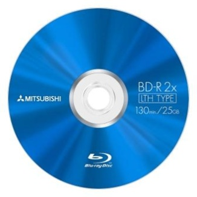
Figura 4: Disco óptico
Se basan en marcas sobre una superficie reflectante, que se escriben y se leen con luz láser, para representar los valores binarios de 1 y 0. Hoy en día nos quedan el CD (Compact Disk), el DVD (Digital Versatile Disk) y el reciente Blu-Ray.
Aunque su tecnología es bien distinta, todos se basan en el mismo principio, e incluso externamente son muy similares: un disco plástico con un material reflectante en su interior. Los surcos y marcas del material determinan la información.
Ventajas
- muy bajo coste por GigaByte
- La información puede durar mucho, aunque en promedio no es así.
Vulnerabilidades:
- Son extremadamente delicados. Si se rayan pueden no funcionar.
- Son sensibles a los cambios extremos de temperatura
Uso:
- Han tenido su papel en el almacenamiento audiovisual (audio, música, vídeo, etc)… pero desde el punto de vista de la seguridad dejan mucho que desear.
- Quedan relegados casi exclusivamente al almacenamiento de contenidos multimedia (en el que una pérdida pueda no ser importante), o de distribución de software (cuyo valor es siempre muy limitado).
2.3 Flash
Las tecnologías Flash son una evolución de las memorias EEPROM. Se trata de memorias en las que cada bit está construido con transistores modificados, capaces de “almacenar” un campo eléctrico, para representar los valores binarios de 1 y 0.
Principalmente, podemos citar tres tipos de dispositivo, que se diferencian más externamente que internamente: los pendrives, las tarjetas de memoria y los discos de estado sólido (SSD-Solid State Drive).
2.3.1 Tarjetas y pendrives
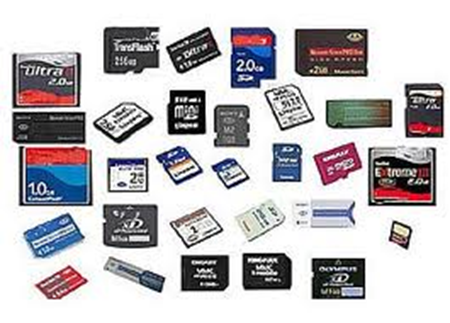
Figura 5: Memorias flash
de los pendrives y las tarjetas podemos comentar que su característica principal es la portabilidad: están pensados para ser transportados, y utilizados de manera temporal.
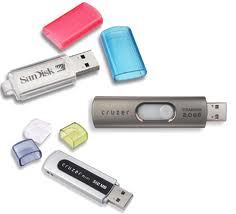
Figura 6: Memorias usb
Básicamente utilizan el mismo principio, aunque distinta interfaz para comunicarse con el ordenador. mientras los pendrives utilizan usb, las tarjetas de memoria tienen cada una su sistema, iniciado por interés comerciales particulares.
ventajas
- transportables
- resistentes
inconvenientes:
- lentos
- poca capacidad, comparada con otros medios
- coste por gigabyte alto
vulnerabilidades:
- la información se degrada si el dispositivo no se utiliza.
- admiten un número limitado de ciclos de escritura. cuando se ha escrito la información unas cuantas veces (del orden de cientos de miles -no es tanto-) el dispositivo puede presentar fallos
- fácilmente extraviables
uso:
- quedan relegados casi exclusivamente al almacenamiento temporal a corto plazo y a transportar información poco relevante de un lado a otro.
2.3.2 ssd
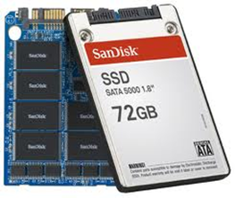
Figura 7: Disco SSD
los ssd nacen con idea de sustituir con el tiempo a los discos duros, ya que no tienen uno de sus inconvenientes principales: no tienen partes móviles que se deterioren, lo que los hace algo menos “delicados”.
tienen prácticamente las mismas características que pendrives y tarjetas, aunque en general alcanzan mayores tamaños. también tienen un coste elevado por gigabyte.
las velocidades de escritura y grabación son muy superiores a tarjetas y pendrives (internamente, son como un raid 0 de tarjetas). lo suficiente como para sustituir al disco duro en dispositivos portátiles.
ventajas
- rápidos
- resistentes a golpes, sin partes móviles
- ahorro de energía respecto de discos duros mecánicos
inconvenientes
- coste alto por gigabyte
vulnerabilidades
- no se conoce con exactitud su tiempo medio de vida antes de un fallo.
3 Unidades de medida de la información
La unidad básica de medida de la información en memoria, tanto principal como secundaria es el byte. se pueden utilizar múltiplos del byte, utilizando un prefijo. en el sistema internacional de magnitudes (iso/iec 80000) y también en la norma ieee 1541 se definen para su uso una serie de prefijos que pueden expresar potencias de 10 (kilo, mega…), o bien potencias de 2 (kibi, mebi,…)
| sistema internacional (decimal) | iso/iec 80000-13 (binario) | ||||
|---|---|---|---|---|---|
| kilobyte | (kb) | 103 | kibibyte | (kib) | 210 |
| megabyte | (mb) | 106 | mebibyte | (mib) | 220 |
| gigabyte | (gb) | 109 | gibibyte | (gib) | 230 |
| terabyte | (tb) | 1012 | tebibyte | (tib) | 240 |
| petabyte | (pb) | 1015 | pebibyte | (pib) | 250 |
| exabyte | (eb) | 1018 | exbibyte | (eib) | 260 |
| zettabyte | (zb) | 1021 | zebibyte | (zib) | 270 |
| yottabyte | (yb) | 1024 | yobibyte | (yib) | 280 |
[más: wikipedia]
4 Redundancia en discos: RAID
Todos los dispositivos de memoria secundaria son susceptibles de presentar fallos. Los discos duros, debido a su carga de trabajo tienen una vida útil muy limitada. Especialmente, en máquinas con rol de tipo servidor de información, es conveniente que haya más de una instancia de cada unidad de información.
La redundancia consiste en utilizar medios de almacenamiento replicados, de tal manera que la información se grabe más de una vez. Cuando uno de los medios de almacenamiento falla debido normalmente al deterioro causado por el uso, un sistema redundante permite que las actividades del sistema informático continúen, aunque sea a costa de una ligera pérdida de rendimiento. La unidad deteriorada se sustituye por una nueva.
RAID significa Redundant Array of Independent Disks. Es un sistema ideado para discos duros, dado que éstos son dispositivos con muchas ventajas, pero un gran inconveniente: su vida útil limitada.
La idea es que un conjunto de varios discos duros (un set, en inglés) actúen bajo la supervisión de un hardware específico, de tal manera que son vistos por el sistema como una única unidad de almacenamiento.
Sin embargo, el hardware RAID se encarga de guardar la información siguiendo estrategias redundantes, de tal manera que si falla uno de los discos del set se obtengan dos ventajas:
- El almacenamiento sigue funcionando, y los ordenadores que hacen uso de él no tienen por qué interrumpir su trabajo.
- El disco averiado puede ser sustituido por uno nuevo en caliente (hot swap - sin necesidad de apagar ni reiniciar ningun ordenador ni el almacenamiento).
4.1 Niveles
Hay varias formas de hacer redundancia de la información en un sistema RAID. Es lo que se llaman niveles.
Los niveles más utilizados son 0, 1, 5 y 6 (el 2, 3 y 4 tuvieron su momento, pero ya casi no se comercializan dispositivos con éstos niveles) También hay otros niveles que son combinación de algunos de éstos, como por ejemplo, el 0+1, 1+0, o el 5+0, también conocidos como 01, 10 o 50 respectivamente.
El nivel de RAID 0 no proporciona redundancia, ni seguridad de ningún tipo, sino velocidad. Por el contrario, hace el sistema más vulnerable.
Los niveles 1, 5 y 6 sí proporcionan redundancia, y por lo tanto, seguridad pasiva ante un fallo de uno de los discos de un set.
Los niveles combinados, como 0+1, 1+0 o 5+0 intentan combinar seguridad con velocidad, aunque siempre a costa de la utilización de un número mayor de discos en el set.
4.2 Cómo se implementa
El sistema RAID normalmente se implementa por hardware especial.
- En placa base:
De estaciones de trabajo. Algunas placas base de las estaciones de trabajo suelen permitir montar sets con RAID entre las unidades de disco duro que pueden tener conectadas directamente. Normalmente, si disponen de éstas características, se trata de RAID 0 (sólo velocidad), RAID 1 y las combinaciones de ambos: 1+0 y 0+1. Éstos equipos suelen conectar con conexiones SATA para sus discos duros.
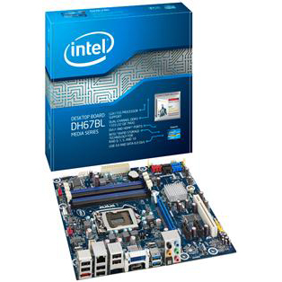
Figura 8: La placa base Intel DH67BL soporta hasta RAID 5
De servidores. La placa base de muchos servidores permite hacer conjuntos RAID entre sus discos duros. Es normal encontrar servidores de ámbito profesional que admiten muchos discos y niveles de raid 5 y 6.
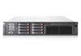
Figura 9: HP Proliant dl380g7 soporta RAID 5 y 6
- Como dispositivo independiente. Funcionan como un periférico independiente y normalmente externo. Los discos duros no se instalandirectamente atornillados, sino sobre unas bandejas llamadas caddy, que se insertan en el dispositivo.
De sobremesa, para SoHo. Son dispositivos para pequeña empresa, sin factor de forma concreto, Se conectan directamente, quizá por eSATA, Firewire o USB.
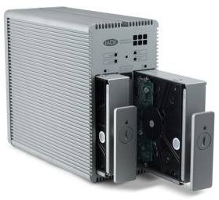
Figura 10: RAID para SoHo
Para rack, para grandes necesidades de almacenamiento. Son dispositivos que se instalan en rack, y son utilizados por uno o más servidores simultáneamente. No se suelen conectar directamente a ningún ordenador, sino que utilizan algún interfaz de red para permitir el servicio a varios ordenadores servidores.
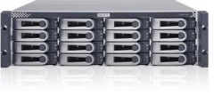
Figura 11: RAID para rack
También puede realizarse RAID por software. Por ejemplo, desde el administrador del sistema de Windows 7 y windows Server 2008 pueden configurarse un conjunto de discos como RAID (Solo Raid 1 en Windows 7 y también RAID 5 en Windows 2008 Server), aunque su instalación y mantenimiento es más complicado que las soluciones por hardware, y tienen una penalización en el rendimiento. [Más: T3 blog]
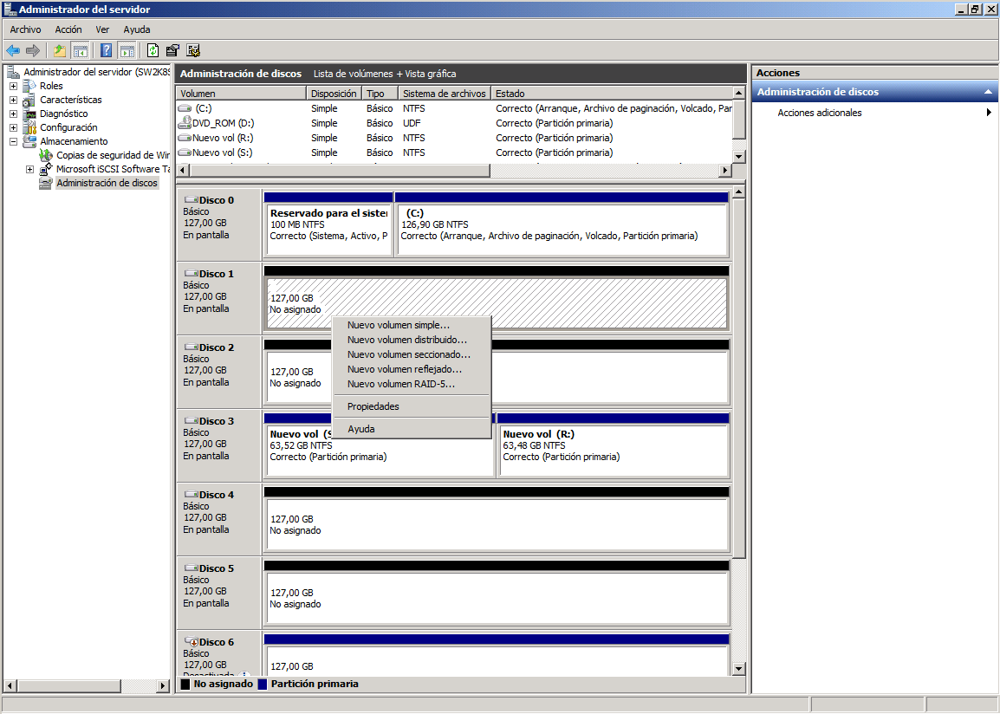
Figura 12: RAID 0 desde Windows
4.3 Cómo funciona.
En primer lugar, un conjunto RAID debe instalarse y configurarse.
En los sistemas RAID en placa base de estaciones de trabajo, el BIOS suele contar con un apartado para configurar conjuntos RAID. En Servidores grandes, que suelen venir con software y hardware preinstalado, es muy probable que esto se haga a través de software específico.
En almacenamientos externos, que funcionan como periféricos, cada uno proporcionará su manera particular de configurar por primera vez el aparato.
Una vez puesto en marcha el almacenamiento, un conjunto (set) RAID será visto por el sistema operativo como una única unidad.
Cuando el sistema operativo envía bloques de datos para grabar, el sistema RAID se encarga de distribuirlos de manera transparente por los discos (con distintas técnicas según el nivel de RAID implementado). Cuando el sistema operativo quiere leer bloques, el sistema RAID se los proporciona de una de las copias, sin que el sistema operativo sea consciente de que la información está grabada de manera redundante. Desde el punto de vista del sistema operativo, un RAID aparece como un solo disco.
4.4 El estado de emergencia
Si se produce un fallo en un disco, el sistema RAID lo marcará como inutilizado, y dejará de utilizarlo. El sistema RAID se pone en estado de emergencia. De cara al sistema operativo de las máquinas que utilicen el almacenamiento, éste seguirá funcionando (quizá algo más lento). El sistema avisará de alguna manera de éste estado (luces, pitidos, mensajes…) para que el disco inutilizado sea sustituido a la mayor brevedad posible por uno nuevo de igual tamaño (o superior, pero entonces sólo se utiliza el mismo espacio que en el disco inutilizado).
El sistema puede seguir funcionando porque tiene la información grabada de manera redundante. Sin embargo, durante el estado de emergencia, esa redundancia no se puede mantener (porque ha dejado de utilizarse un disco). Así que es necesario salir lo antes posible de él, ya que mientras dure el riesgo de un posible fallo definitivo se eleva mucho. (Formalmente, a éste estado se le denomina “Modo provisional de recuperación de datos” -Interim Data Recovery Mode-)
La mayor parte de los sistemas RAID permiten que el disco se cambie sin tener que apagar equipos ni almacenamiento (hot swap - cambio en caliente). Para ello, los discos no se instalan directamente en bahías de 3.5”, sino en bandejas extraíbles llamadas caddies (en singular es caddy… un caddy, dos caddies)
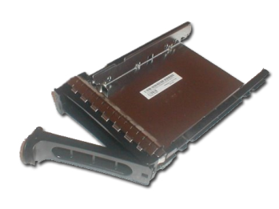
Figura 13: Un Caddy de soporte para disco duro en un RAID
4.5 El estado de reconstrucción
Una vez insertado el disco nuevo, comienza automáticamente la reconstrucción. El sistema RAID reconstruirá la información que tenía el disco inutilizado sobre el disco nuevo. El proceso puede durar varias horas, ya que mientras dura, el dispositivo RAID sigue funcionando y sirviendo a los ordenadores que tiene conectado.
El estado de emergencia no finaliza hasta que finaliza la reconstrucción.
5 Los niveles RAID
5.1 RAID 1
También conocido como espejo (Mirroring). Es la implementación más sencilla de RAID. Se utilizan al menos dos discos. Se graba una copia exacta de la información en ambos.
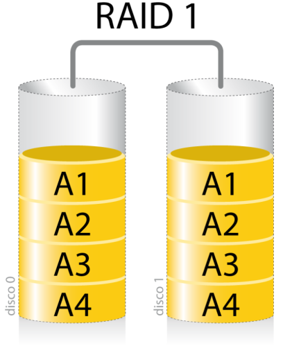
Figura 14: RAID 1 (Cada columna representa a un disco. Cada bloque A1, A2… representa información)
El dispositivo en conjunto tiene la misma capacidad que uno de los discos. Ej: si se instalan dos discos de 500GB, el almacenamiento se comporta como un único disco de 500GB
5.2 RAID 5
Este nivel se suele implementar con al menos cuatro discos. Utiliza el cálculo de la paridad simple, que además se distribuye entre varios discos.
El hecho de distribuir la paridad hace que cuando falle un disco, el sistema baje de igual manera su rendimiento sea cual sea el disco que ha fallado. Si se dejara un disco entero para paridades, cuando fallase éste no tendría impacto sobre el rendimiento del sistema, y cuando fallase uno de los otros tres tendría impacto significativo en el rendimiento.
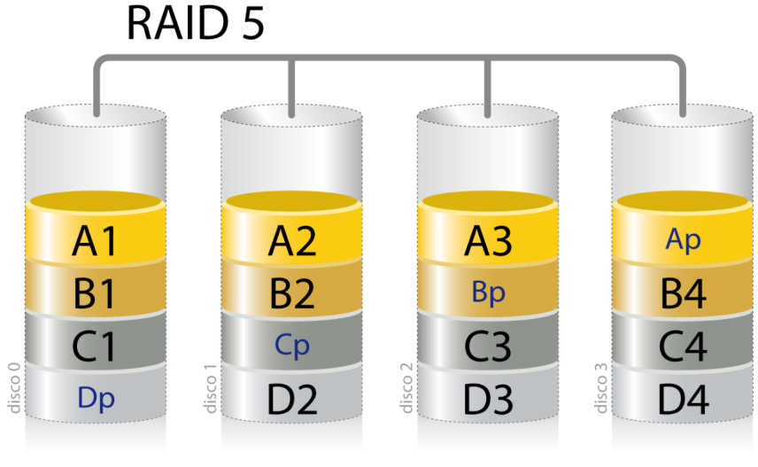
Figura 15: RAID 5 (Cada columna representa a un disco. Cada bloque A1, A2… representa información. P representa paridad)
Cada columna representa un disco. Los bloque con números representan datos originales, y los bloques con una “p” representa paridades, calculadas a partir de los bloques con la misma letra delante. Por ejemplo, el bloque Ap es la paridad calculada de los bloques A1, A2 y A3.)
Éste es uno de los niveles más utilizados, debido a su relación calidad/precio. Se gasta en paridades el tamaño equivalente a uno de los discos. Ej: Si se crea un conjunto de RAID 5 con cuatro discos de 500GB, el almacenamiento se comporta como un único disco de 1500GB.
RAID 5 puede utilizarse con cualquier número de discos, pero con menos de 4 se gasta bastante espacio en paridades, y con más de 4 se va aumentando el riesgo de que dos discos fallen simultáneamente (caso que RAID 5 no puede recuperar)
5.3 RAID 6
Se creó con una finalidad muy concreta: si en un sistema RAID 5 falla un segundo disco durante el estado de emergencia, se pierde absolutamente todo. Aunque el riesgo de que ésto ocurra es bajo, no es inexistente. Raid 6 intenta reducir ese riesgo.
RAID 6 utiliza un sistema similar a las paridades de RAID 5, pero algo más complejo. (En realidad, es un caso de códigos correctores de errores de Reed-Solomon) y distribuye DOS bloques de códigos correctores. El sistema permite el fallo simultáneo de dos unidades.
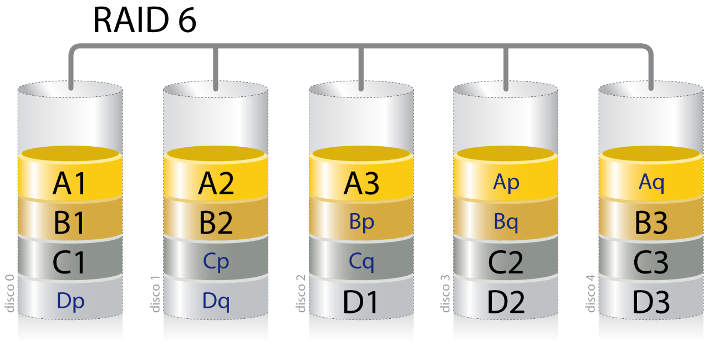
Figura 16: RAID 5 (Cada columna representa a un disco. Cada bloque A1, A2… representa información. P y Q representan paridad)
Cada columna representa a un disco. Los bloques con números son datos. Los bloques “p” y “q” son los códigos correctores. Ej: Ap y Aq son códigos correctores que permiten reconstruir hasta 2 bloques cualesquiera de la banda amarillo claro -la de los bloques “A”-.
Se gasta en códigos correctores el tamaño equivalente a dos de los discos. Ej: Si se crea un conjunto de RAID 6 con cinco discos de 500GB, el almacenamiento se comporta como un único disco de 1500GB.
5.4 RAID 5E y 6E.
Son versiones modificadas de RAID 5 y 6, en las cuales, se monta en el dispositivo un disco más, en blanco… y que no forma parte del conjunto inicial (set). En general, va a estar inactivo. Es el disco de reserva (spare disk).
Cuando en 5E o 6E se inutiliza un disco, se empieza la reconstrucción inmediatamente sobre el disco de reserva. Se debe sustituir el disco inutilizado, pero ese pasa a ser el nuevo disco de reserva, que estará inactivo hasta el próximo fallo.
5.5 RAID 0
Consiste en concatenar la capacidad de varios discos. No proporciona ningún mecanismo de redundancia, por lo que no es realmente un nivel de RAID.
- Puede utilizarse para facilitar la administración, ya que un disco grande es más simple de gestionar que varios pequeños en algunos casos.
- Se utiliza generalmente para aumentar la velocidad de lectura/escritura de varios discos: cada operación se reparte de forma aleatoria entre cada disco real, por lo que se pueden realizar en paralelo.
5.6 Combinaciones de RAID
Puesto que un disco RAID puede verse por el sistema operativo como un disco más, es posible utilizar un disco RAID en la construcción de otro RAID. Por ejemplo, el RAID 10 se construye con varios discos RAID 1, agrupados todos ellos en un RAID 0
Las combinaciones de RAID buscan conseguir las ventajas de distintos niveles RAID. Es común que el nivel inferior se forme con RAID 1, 5 o 6 (que aumentan la seguridad), y el nivel superior por RAID 0 (que aumenta la velocidad, y la flexibilidad de uso)
- Raid 10: Un RAID 0 a partir de discos que son RAID1
- Raid 50: Un RAID 0 a partir de discos que son RAID5
5.7 Lo que RAID NO PUEDE HACER
- RAID no protege los datos. Los datos siguen siendo vulnerables a una amplia variedad de riesgos aparte del fallo físico de disco, por lo que RAID no evita la pérdida de datos por estas causas. RAID no impedirá:
- que un virus destruya los datos
- que éstos se corrompan
- que sufran la modificación o borrado accidental por parte del usuario
- que un fallo físico en otro componente del sistema afecten a los datos.
- RAID no simplifica la recuperación de un desastre (algo más allá del simple deterioro de un disco). Cuando se trabaja con un solo disco, éste es accesible normalmente mediante un controlador SATA o SCSI incluido en la mayoría de los sistemas operativos. Podemos sacar el disco y llevarlo a otro ordenador y leerlo. Sin embargo, las controladoras RAID necesitan controladores software específicos. Las herramientas de recuperación que trabajan con discos simples en controladoras genéricas necesitarán controladores especiales para acceder a los datos de los conjuntos RAID. Si estas herramientas no los soportan, los datos serán inaccesibles para ellas.
- RAID no facilita el traslado de los discos a un sistema nuevo. Cuando se usa un solo disco, es relativamente fácil trasladar el disco a un sistema nuevo: basta con conectarlo, si cuenta con la misma interfaz. Con los discos de un conjunto RAID no es tan sencillo. Dado que los distintos fabricantes de almacenamientos RAID usan diferentes formas de implementar los niveles es virtualmente imposible mover los discos de un conjunto RAID a otro dispositivo RAID diferente.
6 La conexión de los almacenamientos
En pequeños ordenadores, los discos se conectan directamente a la placa base mediante conexiones directas, como SATA.
Sin embargo en grandes almacenamientos suele ser conveniente que éstos puedan ser accedidos por más de un ordenador servidor, para rentabilizar al máximo el espacio y los mecanismos de redundancia.
Así pues, definiremos tres formas de conectar los almacenamientos a los ordenadores Se trata de DAS, NAS, SAN. También hablaremos de un tipo particular de SAN: las iSCSI SAN.
6.1 DAS: Direct Attached Storage.
Ésta es la forma tradicional de conectar los almacenamientos: directa a un ordenador… bien a la placa base, a través de conexiones típicas (SATA, SCSI, etc…) o externas (eSATA, FireWire, USB).
El sistema operativo puede suponer que es el único que usa ese disco. Las operaciones más básicas a realizar sobre un disco DAS son relativas a sectores: leer sector y escribir sector.
6.2 NAS: Network Attached Storage.
Se conecta el almacenamiento a una red de comunicaciones, bien local de tipo Ethernet o cualquier otra, o bien remota.
El dispositivo de almacenamiento debe contar con algún tipo de software servidor de ficheros. Un dispositivo NAS cuenta en su interior con un pequeño sistema operativo preconfigurado y un software para servir ficheros a través de la red, con uno o más protocolos bien conocidos.
El dispositvo es visto por los otros ordenadores de la red como un equipo más, pero capaz de servir ficheros.
Las operaciones básicas que se pueden realizar con un NAS son relativas a ficheros: crear un fichero, listar un directorio, borrar fichero, modificar fichero,… En cambio,
Suelen disponer de alguna medida de seguridad básica para proteger la confidencialidad, basadas en listas de control de acceso (ACLs - access control lists… es decir,: un mecanismo de usuarios, contraseñas y permisos…)
Si se hace un uso muy intenso, un dispositivo NAS supone un pequeño cuello de botella, debido a la sobrecarga de trabajo que conllevan los protocolos de servicio de ficheros por un lado y los protocolos de red y transporte por otro. Algunos protocolos comunes de servicio de ficheros son:
- NFS (Network File System), utilizado tradicionalmente en sistemas Unix y GNU Linux
- CIFS (Common Internet File System), utilizado para compartir ficheros e impresoras en sistemas Windows. (A éste protocolo se le conocía como SMB -Server Message Block- con anterioridad a 1998)
- FTP (File Transfer Protocol). Se trata del protocolo de aplicación típico para la transferencia de ficheros sobre redes TCP/IP (como Internet).
- SFTP (Secure FTP): Similar al FTP pero encapsulado en una conexión SSH.
6.3 SAN: Storage Area Network
Una SAN, o red de almacenamiento consiste en conectar un conjunto de grandes almacenamientos con un conjunto de grandes servidores, utilizando enlaces de red.
Ésta red puede utilizar cualquier tecnología, pero en general se utilizan de tipo Fibre Channel, o Ethernet (normalmente de de 1 o 10 Gb/s, pero en la actualidad hay enlaces de hasta 100Gb/s)
En este tipo de redes de almacenamiento se intenta no utilizar los protocolos de red o transporte habituales (como TCP, IP, UDP), ya que suponen una sobrecarga. Los almacenamientos funcionan a nivel de bloque o sector, que sirven a través de la red con protocolos sencillos.
Eso significa que los responsables de gestionar un sistema de ficheros son los ordenadores que hacen uso de los almacenamientos. (A diferencia de NAS, en el que el almacenamiento es responsable del sistema de ficheros y de servirlos a través de la red). La seguridad en SAN también debe realizarse a nivel de servidor, y no de almacenamiento. Además, las redes suelen ser locales y a cortas distancias, con lo que también se puede prestar atención la seguridad respecto al acceso físico.
En una SAN, los servidores disponen de un driver (un controlador de dispositivo) configurable, que hace que puedan “ver” al almacenamiento como si fuera una unidad de disco más.
Una SAN puede mejorar la disponibilidad y/o la integridad, al alejar físicamente entre sí servidores y discos:
- Dos ordenadores pueden utilizar simultáneamente el mismo disco SAN (con cuidado de no invalidar las escrituras del otro). De esta forma, si un servidor deja de funcionar todos los datos están disponibles a través del otro servidor
- Las órdenes que envía un servidor pueden “duplicarse” y enviarse a dos discos SAN simultáneamente. Si un disco tiene algún problema, el servidor puede seguir utilizando el otro Se pueden duplicar a la vez servidores y ordenadores, combinando los casos anteriores.
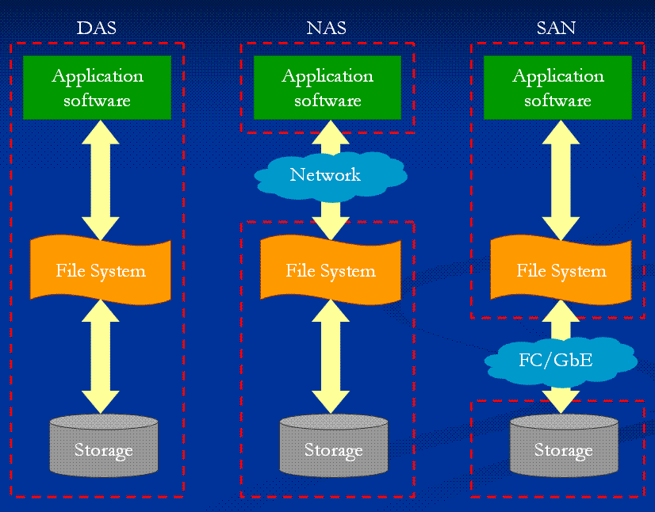
Figura 17: Comparación entre DAS, NAS y SAN (las cajas representan a un ordenador)
6.4 Un caso particular: iSCSI SAN
Un caso particular de SAN lo forman las redes iSCSI (SCSI over Internet). Básicamente consisten en redes SAN, pero montadas sobre TCP/IP, y que hacen uso del protocolo SCSI para la transmisión de sectores a través de la red.
- Ventajas:
- Pueden aprovechar infraestructuras de redes TCP, que también sirven para comunicaciones, de área local o a larga distancia.
- Inconvenientes:
- Una ligera sobrecarga con respecto a una SAN local sin protocolos de red y transporte, pero no tan acusada como en un sistema NAS (que tiene red, transporte, aplicación y sistema de ficheros).
Este tipo de SAN han experimentado un incremento importante en su utilización en los últimos años, ya que se configura e instala de forma sencilla y más económica en Windows 2008 server y algunas versiones de Unix o GNU Linux.
7 La detección del deterioro de los discos
Los sistemas redundantes deben marcar un disco como inutilizado cuando detectan un fallo.
7.1 CRC
El Control de Redundancia Cíclica (CRC) es un mecanismo matemático que sirve de comprobación de la integridad de los datos, y que se calcula cada vez que se leen o se escriben datos en un almacenamiento. El cálculo del CRC puede detectar fallos en un disco… una vez que éstos fallos se han producido… es decir, cuando el disco no es capaz de leer o escribir bien un sector.
7.2 S.M.A.R.T.
Pero por otro lado, sabemos que todos los discos duros se deterioran con el tiempo de manera inevitable. Los fabricantes de discos duros han desarrollado un sistema de auto-monitorización llamado SMART (Self-Monitoring Analysis and Reporting Technology). El sistema viene implementado en mayor o menor medida en las unidades de disco. Consta de una serie de sensores que miden atributos físicos o lógicos relativos al funcionamiento del disco duro.
Cada uno de esos atributos se representa con un valor de un byte. Esos atributos van bajando su valor a medida que el disco se va deteriorando. Cuando caen por debajo de un mínimo marcado por el fabricante y distinto para cada uno de los atributos, podemos considerar que el sistema SMART nos indica que el disco duro va a sufrir un fallo definitivo en breve.
Esos valores mínimos han sido fijados por el fabricante basándose en datos estadísticos… así que puede que el disco falle cuando lo dice SMART… o puede que no. Pero por probabilidad… es más probable que sí lo haga.
El disco duro monitoriza de manera autónoma esos atributos. Un sistema RAID (u otros sitemas de monitorización) pueden leer la información SMART de esos atributos medidos, junto con el valor mínimo aceptado de cada uno de ellos (threshold). Si cualquiera de los atributos cae por una sola vez por debajo del mínimo (threshold), el sistema SMART indicará a quien quiera leerlo (un sistema RAID, por ejemplo) que el disco ya no presenta garantías de funcionamiento fiable.
El sistema SMART sirve a un almacenamiento RAID para inutilizar un disco antes de que se produzca un fallo.
Es necesario tener en cuenta que no existe una uniformidad con respecto al nivel de implementación de SMART en cada disco: lo fija y lo elabora el fabricante del disco… Es posible que un disco monitorice muchos datos o pocos… y que aun en cualquiera de esos casos, un fabricante acierte más en sus predicciones o menos. La lógica indica que cuanto mayor sea el número de atributos monitorizados, mayor será también la probabilidad de hacer previsiones exactas. No siempre es así, porque la probabilidad no es la realidad… pero ayuda. [más: wikipedia]
8 Redundancia en servidores: clústeres.
Al igual que los almacenamientos se disponen formando sistemas redundantes, también se implementa a veces redundancia en los servidores.
Cuando un grupo de servidores están dedicados a la misma tarea, a menudo se configuran en forma de clúster. Un clúster de servidores es un grupo de servidores con un hardware y un software similar o idéntico, que realizan las mismas tareas.
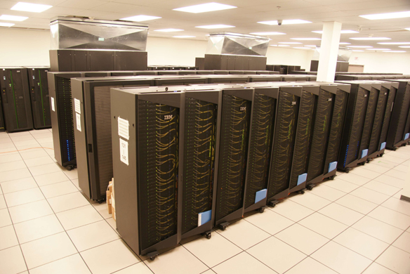
Figura 18: El IBM iDataPlex funciona en clúster, como un único ordenador, aunque está formado por servidores independientes. El de la foto tiene unas 30000 CPU en total
La idea es que todo el conjunto debe dar la impresión de ser un gran ordenador, en lugar de varios ordenadores independientes. (También puede hacerse sólo para un servicio… ej… que el conjunto sigan siendo ordenadores independientes en su administración y gestión, pero que entre todos proporcionen un sólo servicio de base de datos).
Por ejemplo, el servicio de correo de GMail se reparte en realidad entre multitud de ordenadores, pero desde el punto de vista del cliente se concentra en uno solo.
En ese caso, se pueden lograr algunos beneficios particulares:
- Alto rendimiento: utilizar al máximo el potencial de cálculo del hardware.
- Alta disponibilidad: permitir que el sistema en conjunto siempre responda, aunque alguna de sus unidades no pueda hacerlo.
- Alta eficiencia: ser capaz de hacer más cosas trabajando los servidores en conjunto que por separado.
- Escalabilidad: ser capaz de crecer de manera sencilla
La utilidad de los clústeres suele estar limitada a dos ambientes claramente diferenciados:
- Los clústeres científicos y de investigación: suelen intentar lograr el alto rendimiento. Sirven para hacer cálculos complicados que en ordenadores de menos prestaciones tardarían mucho. Se utilizan en muchos ámbitos para desarrollar productos (medicina, farmacia, ingeniería, astronomía, etc…)
- Los clústeres de IT y comerciales: que normalmente participan en el tratamiento de grandes volúmenes de datos. Buscan la alta disponibilidad y la alta eficiencia.
En general, un clúster necesita de varios componentes de software y hardware para poder funcionar:
- nodos (los ordenadores)
- almacenamientos
- sistemas operativos individuales para cada ordenador
- conexiones de red, para conectar los nodos entre sí y los nodos con los almacenamientos
- middleware: el software que unifica los nodos para que actúen todos como si fueran uno solo. Debe dar al usuario la impresión de que se enfrenta a un solo ordenador. (Ejemplos de middleware para clústeres: mosix, openSSI)
- Aplicaciones a medida, programadas teniendo en cuenta la redundancia de servidores.
9 El respaldo de los datos: la copia de seguridad.
Las copias de seguridad de la información son una medida de seguridad pasiva para restaurar la información a un estado válido y reciente, de tal manera que el impacto de cualquier posible contingencia sea mínimo.
No es fundamental realizar copias de seguridad del software. El software se reinstala. La información no.
Las copias de seguridad se realizan normalmente mediante aplicaciones especialmente diseñadas para ello. Estas aplicaciones, una vez configuradas funcionan de manera autónoma. Para configurarlas, a éstas aplicaciones se le indica una determinada programación:
- En qué medio se van a realizar las copias
- La periodicidad de la copia, y la hora.
- El tipo de copia (total, diferencial, incremental).
- Algunos otros parámetros.
Una aplicación de copia de seguridad puede tener varias de esas programaciones, realizándose distintos tipos de copia en distintos medios y con distintas periodicidades.
9.1 Tipos de copias de seguridad.
- Según la intención con la que se realice la copia, podemos distinguir:
- Back-up: llamamos así a las copias de los archivos realizadas periódicamente, con intención de poder deshacer una posible pérdida de integridad en los datos originales, y revertir los datos a como estaban en un momento anterior en el tiempo.
- Archiving: copiar los archivos para almacenar por un largo período de tiempo, sea por cuestiones legales como la contabilidad o por motivo de espacio, para retirar información antigua. Si se necesitan, se pueden restaurar. -Disaster recovery: recuperar desde una situación en la que el sistema original está fuera de servicio. Se requiere entonces que la copia de seguridad permita restaurar totalmente los datos y el software del sistema.
- Según la información que se guarde durante una copia, podemos distinguir:
- Backup total: se almacenan TODOS los datos. Debería siempre guardarse en un lugar seguro, alejado de los datos originales (off-site). Suele recomendarse hacer un backup total al menos una vez a la semana. Es un procedimiento lento y requiere mucho espacio.
- Back-up diferencial, se almacenan sólo los datos modificados después del último back- up TOTAL realizado. Se hace para ahorrar tiempo y espacio. Para recuperar los datos en caso de pérdida de integridad se necesitaría el último backup total y el último backup diferencial.
- Back-up incremental, se almacenan sólo los datos modificados desde el último back-up, SEA DEL TIPO QUE SEA. El back-up incremental es más veloz y el que menos espacio ocupa…. pero la recuperación de datos involucra al último backup total, y a una serie de backups incrementales. Eso puede hacer el proceso algo más lento.
- Según el sitio donde se guarde la copia.
- On-Site: La copia se guarda físicamente cerca de la información original.
- Off-Site: La copia se guarda físicamente lejos de la información original. Debería hacerse un backup off-site al menos una vez a la semana. Garantiza que hay una copia fuera de las dependencias donde está la información original y que puede restaurar la información en caso de desastre total.
9.2 Los medios en los que se guardan las copias
- Hay varios medios posibles para guardar copias de seguridad:
- Discos duros (Tanto locales, como en red, o NAS): Ya sabemos que sufren desgate y tienen una vida útil limitada. No plantean problemas si rotamos las copias a través de varios discos y contamos con su deterioro con el tiempo.
- Dispositivos Flash: Tarjetas y pendrives son poco fiables. Se deterioran en poco tiempo y tienen una serie de ciclos de escritura limitado. Los SSD, algo más fiables tienen un coste por GB elevado. No son especialemente recomendables para backup.
- Cintas magnéticas: Algo lentas, pero baratas. Mantienen los datos mucho tiempo y son fiables. Al ser un medio extraíble permiten almacenamiento off-site. Adecuadas para backup.
- Dispositivos ópticos. Son soportes delicados. Poco fiables. Los regrabables se deterioran de manera dramáticamente rápida. No recomendados para respaldo de datos.
- Copias en otro equipo de la red local.
- A menudo se realizan copias de seguridad de los datos de un equipo en otro equipo de la red local o en dispositivos NAS. Es adecuado mientras se produzca la rotación adecuada. Al ser copias on-site, si hay un incidente que comprometa físicamente a los equipos de la red local (un incendio, por ejemplo), se verán afectados tanto la información original como las copias.
- Copias en equipos remotos (off-site) a través de una red.
- Muy adecuadas, ya que se envía una copia de la información lejos de la información original
- Se pueden configurar los programas de copia de seguridad para enviar la copia a un equipo remoto a través de la red, que podrá recogerla con FTP o protocolos similares.
- Algunas empresas están empezando a ofrecer espacio de almacenamiento en sus datacenters, accesibles a través de red, y que pueden ser utilizado para distintos fines. Algunas aplicaciones de copias de seguridad pueden enviar copias a éstos almacenamientos remotos. (ej: Amazon S3)
- Existen muchas empresas que ofrecen almacenamiento remoto explícitamente diseñado para copias de seguridad. El coste suele ser elevado, pero garantizan el disaster recovery al ser copias off-site. Su configuración suele ser sencilla y además ofrecen medidas de seguridad
especialmente pensadas para mantener a salvo las copias de seguridad, como la rotación de copias y la encriptación.
9.3 Diseño de las políticas de respaldo.
Ya hemos comentado que lo más importante de las copias de seguridad es diseñar unas políticas y ceñirse a ellas. No obstante, hay algunos factores simples a tener en cuenta: Seguir un sistema simple para hacer las copias NO ES EFECTIVO. Por ejemplo, hay mucha gente que hace una copia de seguridad periódicamente en un disco duro externo o en un Cd Rom. Si surge, por ejemplo, un malware que compromete la integridad, los datos en buen estado de una copia podrían ser sobreescritos con datos dañados antes de haberse manifestado el problema. Es decir, tanto los datos originales como los de la copia de seguridad pueden estar mal. Por eso es necesario seguir un sistema de rotación, es decir, una política de respaldo segura.
Las tres reglas de oro del diseño de políticas de respaldo. Aplica tu sentido común a la hora de diseñar unas políticas de respaldo con los medios que tengas, pero no te olvides de ellas:
Rotación - No usar el mismo medio para dos copias que vayan seguidas.
Si el sistema falla durante el proceso de back-up, se perderán los datos originales y los del back-up, y no habrá otra copia para restaurar. Es necesario disponer de varios medios, de igual tecnología o distinta… e ir rotando las copias sucesivas entre ellos.
Copias off-site - Siempre hay que asegurarse de guardar un back-up, de no más de una semana de antigüedad, fuera del sitio donde está su sistema.
Si las instalaciones de su organización sufren un incidente global, la copia off-site permitirá la recuperación del desastre.
- Back-up diario - Realizar un back-up cada día toma poco tiempo. La mayoría de los datos se vuelven obsoletos rápidamente. Utilice un medio distinto cada día de la semana
9.4 Encriptación
Es necesario hacer notar que es importante almacenar las copias de seguridad cifradas, de tal manera que si alguien no autorizado se hace con una de ellas, la confidencialidad de los datos no se vea comprometida.
9.5 El bit de archivo y la fecha de modificación.
A los programas de copia de seguridad se les indica que deben hacer copia de los archivos y carpetas contenidos en una determinada ubicación.
Las copias incrementales o diferenciales sólo copian algunos ficheros…. para saber cuáles son, cuentan con dos herramientas:
- Cada archivo o carpeta lleva grabada una fecha y hora de la última modificación. El sistema operativo se encargará de cambiarla en cada modificación. Puede parecer una obviedad, pero el reloj del sistema debe estar funcionando y no perder la hora, o el programa de copia de seguridad podría confundirse.
- En windows, cada archivo o carpeta tiene una serie de atributos, uno de ellos el el atributo de archivo. Todos los archivos en windows lo tienen inicialmente activado. Los programas de copia de seguridad desactivan ese atributo cuando el archivo ha ido a parar a un backup, y el sistema operativo windows lo vuelve a activar cuando se modifica su contenido. Así pues, durante una copia incremental, sólo deben guardarse los archivos con éste atributo activado. No es necesario comparar fechas.
A pesar de estas facilidades, pueden configurarse las herramientas de copia para ignorar estos datos y fijarse únicamente en la información contenida en los ficheros.
9.6 Políticas de respaldo.
Una política de respaldos es una estrategia para realizar las copias de seguridad. Se definen todos los aspectos aquí descritos:
- Periodicidad
- Cada cuánto se realiza una copia total
- Cuántas copias diferenciales o incrementales se basan en dicha copia
- Cuánto tiempo se conservan las copias
- Localización: Qué copias se guardan onsite y cuáles offsite
- Programación: en qué momentos se realizan las copias
- Implementación: Qué programas se utilizan, y en qué medios deja las copias
- Configuración: Copias encriptadas, basadas en bit de archivo/fecha/contenidos…
Es importante plasmar por escrito las políticas de respaldo, junto con otras políticas de seguridad, y ceñirse a ellas con rigor. La política de respaldo forma parte del plan de contingencia
- La ejecución de las copias es parte del plan de respaldo
- La recuperación de las copias es parte del plan de recuperación
Muchos de los incidentes de seguridad relacionados con pérdidas de datos por problemas en las copias de seguridad han sido consecuencia directa o indirecta de no tener políticas de respaldo o de no ceñirse a ellas, mucho más que de un diseño pobre de las políticas de respaldo.